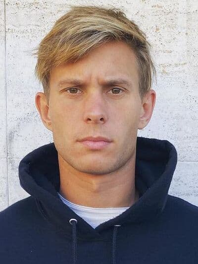

Tricking My Life
Обучалки
Атлеты
История появления
Помощь

Павел (Паша) Петкун – трейсер из Латвии и многократный победитель фриран-соревнований Red Bull Art of Motion, который верит, что человеческой изобретательности нет предела.